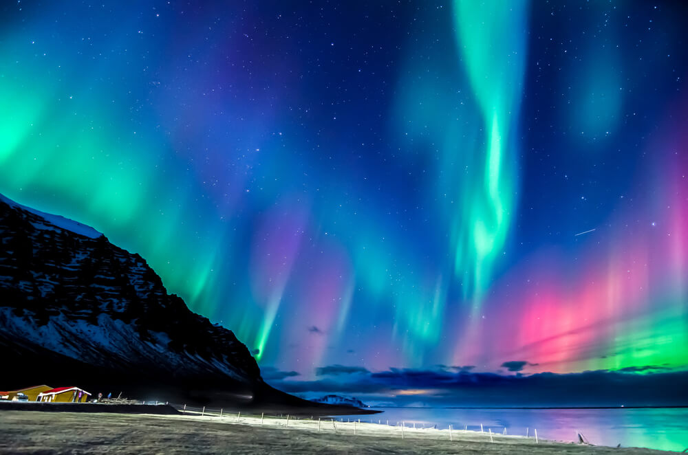

Meu Lugar dos Sonhos: Aurora Boreal na Noruega
O lugar que mais desejo visitar é a Noruega, especialmente para presenciar o espetáculo mágico da Aurora Boreal.

Motivos para visitar:
- Ver a Aurora Boreal
- Conhecer os fiordes
- Cultura viking
- Cidades como Oslo
- Culinária local
"A Aurora Boreal pinta o céu com luzes mágicas durante o inverno norueguês."
Além das luzes do norte, a Noruega oferece paisagens incríveis e qualidade de vida exemplar.